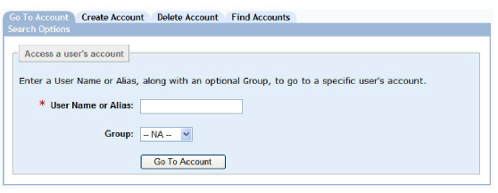
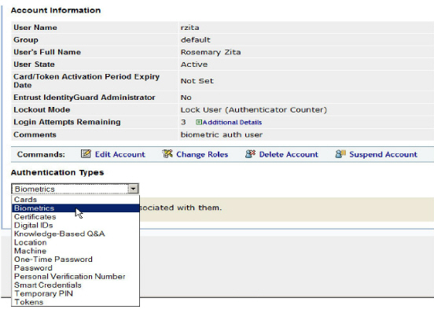
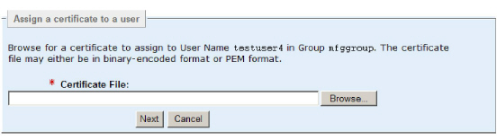
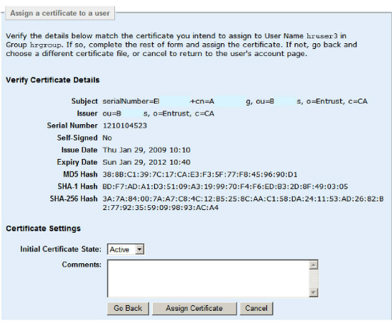

|
IdentityGuard Server 11.0 Administration Guide |
|
IdentityGuard Server 11.0 Administration Guide |
You assign certificates to users from the View Account screen in the Administration interface.
Note: The Certificates tab is used only to administer CA certificates. See Administering CA certificates.
To assign a user certificate
1. Log in to the Entrust IdentityGuard Administration interface as the administrator.
 On the
Windows computer where Entrust IdentityGuard is installed
On the
Windows computer where Entrust IdentityGuard is installed
2. Click User Accounts.
The Go To Account screen appears.

3. Enter the user name of the user, and select the group, if desired.
4. Click Go To Account.
The View Account screen appears, displaying the user information.

5. Under Authentication Types, select Certificates.
6. Click Assign Certificate.
The Assign Certificate pane appears.

7. Enter the certificate path, or use the Browse button to find and select the certificate from the file system.
The certificate must be a valid certificate. See Certificate validation for a list of criteria for a valid certificate.
8. Click Next.
The Verify Certificate screen appears, displaying the certificate details.

9. If the certificate is correct, click Assign Certificate.
Note: If the
user already has the maximum allowed number of certificates (as set by
policy), then this operation will fail, and you see an error message.
You can also set the policy to automatically delete old certificates when
loading new certificates that would push the user’s certificate count
over the limit.
For more information, see Certificate
Authentication policies.
Note: The assign operation fails if the user certificate issuer DN or serial number is not globally unique.